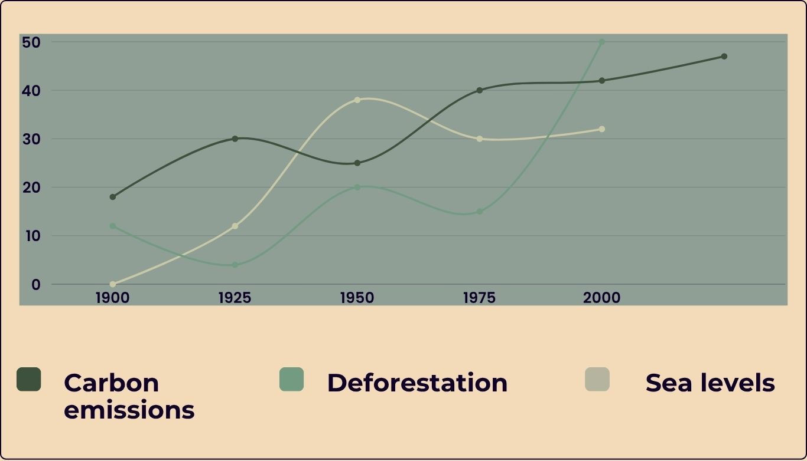
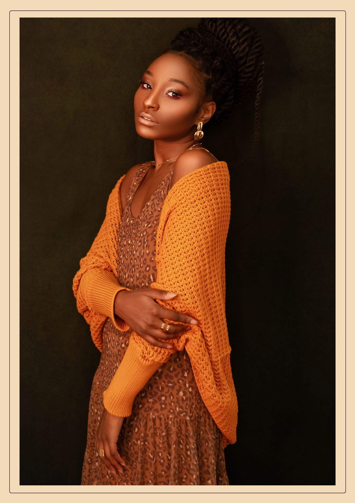

Tēnā koutou katoa, Ko Sarah tōku ingoa and I spent two years earning my Master of Environmental Management from Harvard University. The reason I created this website is because when I was a little kid growing up in New Zealand, my dad loved going hiking, but as time went on, the hiking trails closed one by one. The causes were always the same: flooding, pollution, or landslides. This made me want to research these places to find the root cause, and all my findings led to one place: climate change. This brought a change in me; I was watching the world die right in front of my eyes, and my heart told me to do something. I believe that protecting our natural world is the defining challenge of our generation, and I am proud to help and that my organization has become part of the solution. This is not only a solution for the Earth, but it is also for the little girl who loved the Earth. It is for every living being on this planet.
